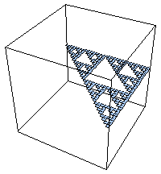
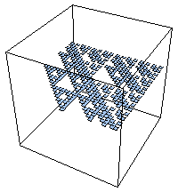
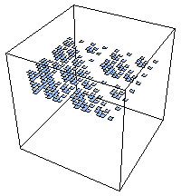
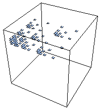
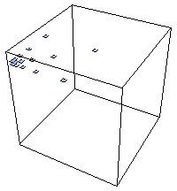
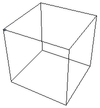
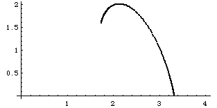

| Taking limits as the side length of the regions go to zero, the coarse Holder exponent
can be refined to the local Holder exponent (or roughness) at any point (x, y)
in address square i1...in is |
| dloc(x,y) = limn → ∞ Log(Prob(i1...in))/Log(2-n) |
| where Prob(i1...in) is the probability
pr(i1)⋅...⋅pr(in). |
| The value for a square of finite length address is called the coarse Holder exponent.
So the local Holder exponent of a point (x, y) is the limit as n → ∞ of the
coarse Holder exponents
of the length n address squares containing (x, y). |
| Now define |
| Eα = {(x, y): dloc(x, y) = α}, |
| the collection of all points of the fractal having local Holder exponent α. |
| As α takes on all values of the local Holder exponent, we decompose the fractal
into these strata Eα. |
| Here are approximations of Eα (α = height) for the example with
p1 = 0.1 and p2 = p3 = p4 = 0.3.
We picture the coarse Holder exponents for length 5 address squares. With these probabilities, there are
six values of α. |
|  |  |
 |
| α ≈ 1.737 | α ≈ 2.054 | α ≈ 2.371 |
|  |  |
 |
| α ≈ 2.688 | α ≈ 3.005 | α ≈ 3.322 |
|
| Recall that to compute the dimension d of an object, we seek a power-law
scaling of the form |
| N(r) = (1/r)d = r- d |
| where N(r) is the minimum number of boxes of side length r needed to cover the object. |
| Roughly, for multifractals we seek power-law scalings of the form |
| N(r,α) = r- f(α) |
| where N(r,α) is the minimum number of boxes of side length r needed to cover Eα. That is,
f(α) is the dimension of Eα. |
| |
| In this example, the smallest value of α, αmin is attained on a gasket, so |
| f(αmin) = dim(Eαmin) = log(3)/log(2). |
| The largest value of α, αmax is attained on a point, so |
| f(αmax) = dim(Eαmax) = 0. |
| Here is a plot of the f(α) curve, dim(Eα) as a function of α. |
|  |